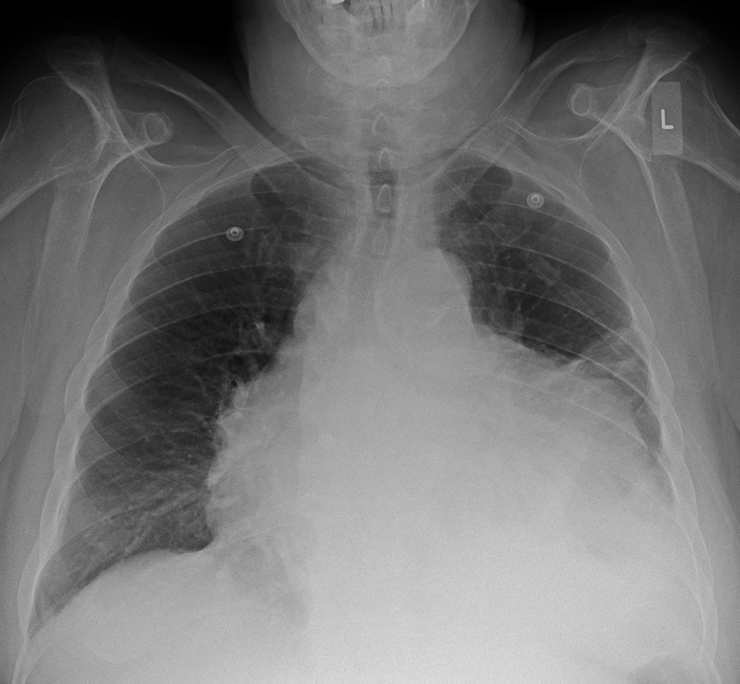
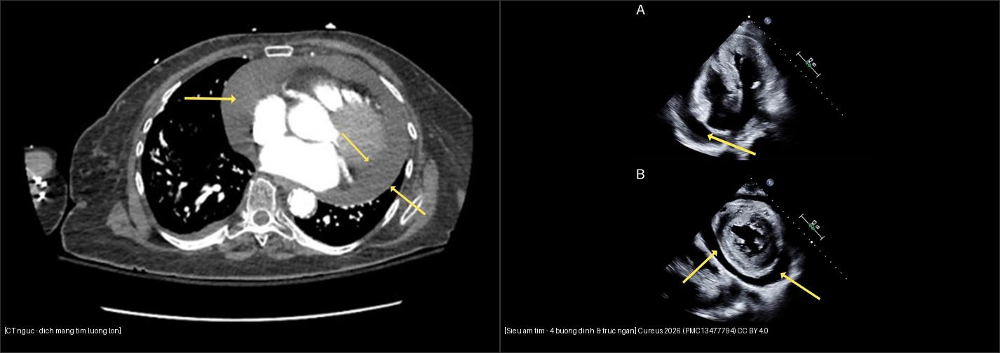
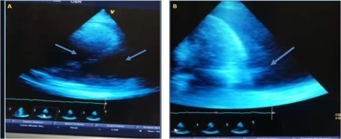

075 — Tràn dịch màng tim & chèn ép tim / Pericardial effusion & Tamponade
Tags: pattern:tran-dich-mang-tim vung:mang-tim
Mức chắc chắn (certainty): tổng hợp y văn (literature synthesis) — nhóm tự biên từ y văn mở, chưa gắn ca nguyên văn đơn lẻ.
1. Tổng quan — dịch bao tim + khi nào thành chèn ép
- Màng tim bình thường < 2 mm, < 50 mL dịch. Dịch tăng dần: lao, ure máu, ung thư (phổi/vú/lymphoma), sau NMCT/mổ tim (Dressler), suy giáp.
- Chèn ép (tamponade) là sinh lý, không phải số mL: dịch tăng nhanh (chấn thương/vỡ) chỉ 150–200 mL đã ép tim; mạn tính cả lít vẫn dung nạp. TẠI SAO: màng tim kém giãn cấp → áp lực trong bao vượt áp đổ đầy thất phải → cung lượng rơi.
- X-quang: bóng tim hình chai nước (water-bottle) + bờ tim sắc; > 250 mL mới thấy to ra. Siêu âm mới là chốt (không phải X-quang).

Tràn dịch màng tim lượng lớn: bóng tim bè 2 bên hình chai nước. Nguồn: Doc James, CC BY-SA 4.0.
Trái: CT ngực trục — dịch màng tim lượng lớn bao quanh tim (mũi tên vàng), đậm độ dịch thấp. Phải: siêu âm tim qua thành ngực — (A) mặt cắt 4 buồng đỉnh, (B) mặt cắt trục ngắn, dịch màng tim bao quanh (mũi tên vàng). Nguồn: Cureus 2026 (PMC13477794), CC BY 4.0; ghép letterbox bằngtools/make_composite.py.

Siêu âm tim ở bệnh nhân suy giáp nặng: (A) mặt cắt 4 buồng đỉnh — dịch màng tim chu vi lượng lớn (mũi tên); khoảng cách sau tối đa 3,2 cm; (B) sau dẫn lưu/diễn tiến. Nguồn: Int Med Case Rep J 2026 (PMC13209143), CC BY-NC-ND 4.0 (nguyên bản, không ghép).2. Gamut bóng tim to
- Dịch màng tim: chai nước + bờ sắc + phổi trong (không phù) — siêu âm phân biệt với tim to.
- Suy tim giãn: tim to + phù phổi + Kerley (bài 033) — có dấu suy.
- U màng tim: khối khu trú + không đều, PET bắt (hiếm).
- Mỡ màng tim: đối xứng + HU mỡ (bài 042) — lành tính.
3. Bảng dấu chèn ép (siêu âm + lâm sàng)
| Dấu hiệu | Ngưỡng/số | Ý nghĩa |
|---|---|---|
| Xẹp nhĩ phải (RA collapse) | Cuối tâm trương, kéo dài > 1/3 chu kỳ | Nhạy nhất, xuất hiện sớm |
| Xẹp thất phải (RV collapse) | Đầu tâm trương | Đặc hiệu hơn, muộn hơn |
| Tĩnh mạch chủ dưới giãn | > 21 mm + xẹp < 50% khi hít vào | Áp nhĩ phải cao |
| Beck tam chứng (lâm sàng) | HA tụt + tĩnh mạch cổ nổi + tim mờ | Cấp cứu chọc hút |
| Mạch nghịch (pulsus paradoxus) | HA tâm thu giảm > 10 mmHg khi hít vào | Chèn ép có ý nghĩa huyết động |
4. Protocol
- Siêu âm tim tại giường: mọi nghi ngờ — đo dịch (mm), RA/RV collapse, IVC, Doppler (biến thiên qua hô hấp).
- CT: dịch + dày màng tim (> 4 mm nghĩ viêm co thắt kèm), nguyên nhân (u, lao).
- Chọc hút cấp cứu khi tamponade: dưới hướng dẫn siêu âm, đường dưới mũi ức; gửi sinh hóa/vi sinh/tế bào.
5. Cạm bẫy
- X-quang bình thường không loại trừ tamponade cấp (150 mL chưa to bóng) — siêu âm mới quyết định.
- Mỡ màng tim giả dịch trên X-quang — CT HU mỡ phân biệt.
- Viêm màng tim co thắt sau dịch mạn: dày + vôi hóa màng tim — khác chèn ép cấp (dịch nhiều, màng mỏng).
6. Tự lượng giá — Blind Quiz
Ca 1 — Nhìn X-quang, gọi tên hình + bước tiếp theo.
- Hỏi: bóng tim hình gì? Phổi có phù không? Bước tiếp theo là gì (X-quang hay siêu âm)?
Bấm để hiện đáp án
- Chai nước + phổi trong → tràn dịch màng tim lượng lớn; bước tiếp là siêu âm tim ngay tìm RA/RV collapse (X-quang không chẩn đoán tamponade).
- Nguồn: Doc James, CC BY-SA 4.0.
Ca 2 — Bệnh nhân khó thở, tĩnh mạch cổ nổi; xem CT và siêu âm tim. Đọc ảnh trước.
- Gợi ý lâm sàng (clinical context): mệt, khó thở tăng dần, huyết áp thấp, tĩnh mạch cổ nổi.
- Câu hỏi: Xác định dịch ở đâu? Tìm dấu hiệu chèn ép (RA/RV collapse) trên siêu âm? X-quang có thể bình thường không?
Bấm để hiện đáp án (findings + chẩn đoán)
- Dấu hiệu (findings): CT — dịch bao quanh tim, đậm độ thấp, lượng lớn (mũi tên); siêu âm — dịch màng tim chu vi ở mặt cắt 4 buồng đỉnh và trục ngắn.
- Chẩn đoán (diagnosis): tràn dịch màng tim lượng lớn; nếu kèm xẹp nhĩ phải > 1/3 chu kỳ hoặc xẹp thất phải → chèn ép tim (tamponade). X-quang có thể bình thường khi dịch tăng nhanh (150–200 mL), nên siêu âm mới quyết định.
- Nguồn ảnh: Cureus 2026 (PMC13477794), CC BY 4.0 (ảnh ghép letterbox).
Ca 3 — HA 85/60 + tĩnh mạch cổ nổi + tim mờ sau chấn thương ngực: chẩn đoán + xử trí? (Tam chứng Beck — mục 3.)
Bấm để hiện đáp án
- Tamponade cấp do máu màng tim: chọc hút cấp cứu dưới siêu âm + mổ cầm máu (không chờ CT đủ liều).
- Nguồn số liệu: dấu chèn ép lấy từ y văn (mục 3); xem thêm ảnh siêu âm ở Ca 2.
Bài liên quan chéo
- 001 – Tổng quan hệ Ngực
- 033 – Phù phổi & ARDS (tim to + phù vs chai nước + phổi trong)
- 080 – Chấn thương ngực (đã có) (máu màng tim)
Không dùng để chẩn đoán độc lập khi chưa có người hướng dẫn.